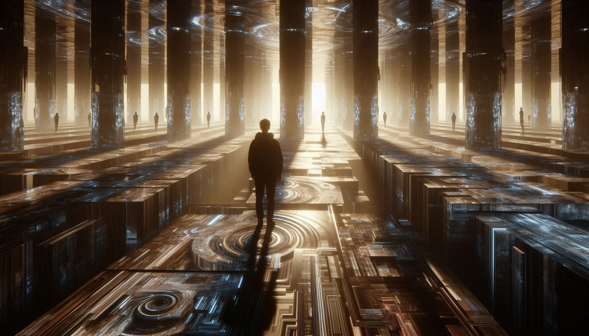

A MEMORY FROM A MOMENT THAT NEVER WAS

Déjà Vu (French for "already seen") ennal oru puthiya situation mumpu experience cheythath pole thonnunna strange feeling aanu. Nammude brain-inte memory processing-il undaakunna oru fraction-of-a-second delay aanu ithinu pinnil ennu karuthappedunnu.
Scientists parayunnath nammude brain-il "Short-term memory" and "Long-term memory" center-ukal undu.
Science-inu purame chila interesting theories koodi undu:
| THEORY | DESCRIPTION |
|---|---|
| Parallel Universe | Matoru universe-ile "nee" ippo same karyam cheyyunnu. Aa timelines thammil overlap cheyyumpol undaakunna signal. |
| Reincarnation | Pazhaya janmathil nadanna oru karyam ippo 'recall' cheyyunnu. |
| Precognitive Dreams | Nee mumpu swapnathil kanda karyangal real aayi nadakkumpol undaakunna thonnal. |
Déjà vu-vinu thulyamaaya matoru condition aanu Jamais Vu. Ithil, ningalkk valare familiarity ulla oru place-o person-o suddenly "strange or new" aayi thonnum. Example: Eppozhum kaanunna oru friend-inte face suddenly aaranennu thirichariyaatha pole thonnal.
"The Matrix" movie-il Déjà Vu-vine describe cheyyunnath oru System Glitch aayittaanu. Simulation-il oru code modify cheyyumpol repeat aavunna scenes!
Déjà Vu namme nammude brain-inte complexity-e kurichu ormippikkunnu. Athu oru biological error aayirikkaam, athallaa enkil nammude reality-ude Secret Door aayirikkaam. Next time ithu thonnumpol, oru second pause cheythu chindikkuka—nee ippo evideyaanu?